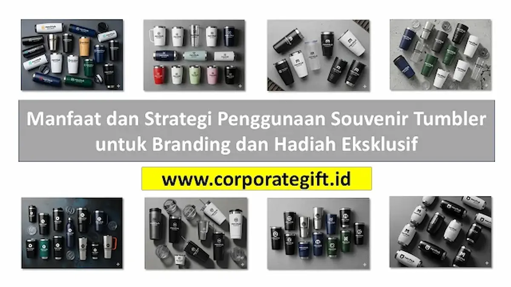

Corporate Gifts ID - Souvenir tumbler adalah pilihan hadiah eksklusif sekaligus media branding yang efektif karena mampu menampilkan logo perusahaan secara berulang dalam jangka panjang, sambil tetap memberikan nilai fungsional bagi penerimanya. Baik untuk pernikahan, ulang tahun, seminar, maupun acara corporate, tumbler menggabungkan manfaat praktis dengan promosi visual bagi brand atau penyelenggara.
Artikel ini membahas manfaat, tujuan, dan strategi penggunaan souvenir tumbler secara lengkap, agar setiap event atau program promosi perusahaan dapat memberikan hasil dan return on investment (ROI) yang maksimal.
Poin Kunci Manfaat & Strategi Souvenir Tumbler:
- Exposure Brand Konsisten: Setiap penggunaan harian di meja kerja atau perjalanan menampilkan logo perusahaan secara berulang.
- Media Promosi Jangka Panjang: Memiliki masa pakai bertahun-tahun, jauh lebih berkelanjutan daripada media promosi kertas.
- Kustomisasi Desain Fleksibel: Logo, tagline, dan warna brand dapat dicetak presisi dengan teknik grafir laser maupun UV print.
- Meningkatkan Engagement: Memberikan hadiah fungsional bernilai tinggi membuat klien dan karyawan merasa sangat dihargai.
- Dukungan Ramah Lingkungan: Mengurangi konsumsi sampah botol plastik sekali pakai dan mendukung inisiatif keberlanjutan (ESG).
Manfaat Souvenir Tumbler untuk Branding Perusahaan
Souvenir tumbler merupakan media branding yang sangat efektif. Berikut beberapa manfaat utamanya bagi strategi pemasaran bisnis Anda:
- Exposure Brand yang Konsisten: Setiap kali penerima menggunakan tumbler di kantor, ruang rapat, maupun tempat umum, logo atau pesan perusahaan akan terlihat oleh orang lain. Hal ini meningkatkan kesadaran merek secara alami.
- Media Promosi Berjangka Panjang: Berbeda dengan flyer atau poster, tumbler memiliki umur pakai yang panjang sehingga brand tetap terlihat selama bertahun-tahun tanpa biaya tambahan.
- Kesempatan Kustomisasi Tinggi: Logo, tagline, dan warna brand dapat dicetak di bodi tumbler secara elegan, menambah kesan profesional dan personal.
- Meningkatkan Engagement dan Loyalitas: Memberikan souvenir tumbler berkualitas kepada klien atau karyawan membuat mereka merasa dihargai, sehingga memperkuat hubungan kemitraan bisnis.
- Efektif untuk Semua Event: Dari seminar, workshop, hingga perayaan anniversary perusahaan, tumbler selalu relevan sebagai media promosi sekaligus hadiah fungsional.
Tujuan Strategis Menggunakan Tumbler Sebagai Souvenir
Souvenir tumbler dapat digunakan untuk berbagai tujuan strategis korporat:
- Kenang-kenangan untuk Tamu atau Peserta Acara: Memberikan hadiah yang berguna dan bernilai pakai tinggi, bukan sekadar barang simbolis.
- Media Branding Perusahaan atau Event: Setiap penggunaan tumbler menampilkan identitas brand atau logo perusahaan secara praktis dan elegan.
- Hadiah Eksklusif untuk Klien atau Karyawan: Meningkatkan nilai persepsi, rasa bangga, dan loyalitas terhadap institusi.
- Promosi Event atau Peluncuran Produk: Tumbler bisa digunakan sebagai hadiah pre-order, merchandise kampanye, atau special promotional gift.
Dengan tujuan yang jelas, tumbler menjadi lebih dari sekadar souvenir, tetapi juga bagian integral dari strategi marketing dan customer engagement.

Kombinasi kemasan hardbox premium dan finishing grafir laser memperkuat citra eksklusif souvenir tumbler.
Strategi Souvenir Tumbler untuk Event dan Acara Kantor
Untuk memaksimalkan dampak souvenir tumbler pada agenda perusahaan, gunakan strategi implementasi berikut:
- Sesuaikan Desain dengan Tema Event: Pastikan warna, tipografi, dan pesan tumbler selaras dengan tema branding acara atau brand identity guidelines perusahaan.
- Personalisasi untuk Penerima: Tambahkan nama peserta atau tamu undangan dengan ukiran laser engraving untuk menciptakan kesan yang lebih eksklusif dan personal.
- Distribusi yang Tepat: Bagikan tumbler saat registrasi awal bersama paket seminar kit atau serahkan saat penutupan acara untuk menciptakan pengalaman berkesan.
- Kualitas Tumbler yang Profesional: Gunakan material stainless steel vacuum SUS 304 food grade agar tumbler tahan lama, anti bocor, dan mampu menjaga suhu panas atau dingin secara maksimal.
- Integrasikan dengan Aktivitas Event: Gunakan tumbler edisi khusus sebagai bagian dari games, kuis interaktif, atau door prize utama untuk meningkatkan keterlibatan peserta.
Tabel Perbandingan Jenis Tumbler dan Rekomendasi Acara
Berikut matriks perbandingan model tumbler terpopuler di Corporate Gifts ID untuk mempermudah pemilihan produk yang sesuai dengan profil acara dan target audiens:
| Model Tumbler | Material Utama | Fitur Unggulan | Metode Branding | Rekomendasi Acara |
|---|---|---|---|---|
| Stainless Vacuum Classic | Stainless SUS 304 Double Wall | Tahan suhu 8-12 jam, anti bocor | Grafir Laser, Pad Print | Seminar Nasional, Welcoming Kit |
| Smart LED Temperature | Stainless Steel SUS 304 | Display indikator suhu sentuh LED | Grafir Laser Silver/Gold | Hadiah Klien VIP, Executive Gift |
| Bamboo Eco Insulated | Natural Bamboo & Stainless | Estetika natural, ramah lingkungan | Grafir Kayu Laser, Sablon | Event Tema ESG / Sustainability |
| Sporty Bottle Tritan | Tritan BPA-Free Plastic | Ringan, transparan, tahan benturan | UV Print Full Colour, Sablon | Fun Walk, Gathering Komunitas |
Souvenir Tumbler untuk Marketing dan Program Loyalitas
Souvenir tumbler juga sangat efektif sebagai media marketing terpadu perusahaan:
- Corporate Gifts B2B: Memberikan souvenir kantor berupa tumbler premium kepada klien, mitra bisnis, atau jajaran manajemen untuk membangun goodwill dan memperkuat relasi kemitraan.
- Promosi Event & Konferensi: Gunakan tumbler dalam seminar, workshop, atau konferensi bisnis sebagai pengganti botol air sekali pakai guna mempromosikan citra korporat yang modern.
- Program Loyalitas Pelanggan: Berikan tumbler custom edisi khusus sebagai reward bagi pelanggan setia guna meningkatkan customer retention dan repeat order.
- Peluncuran Produk Baru: Gunakan tumbler sebagai merchandise promosi untuk meningkatkan awareness produk baru dengan cara yang fungsional dan disukai audiens.
Souvenir Tumbler sebagai Hadiah Eksklusif Premium
Souvenir tumbler bisa menjadi hadiah premium yang bernilai tinggi dan berkelas melalui kurasi yang tepat:
- Kesan Eksklusif: Desain elegan dengan finishing doff matte atau kombinasi kayu alami membuat penerima merasa sangat diapresiasi.
- Personal Touch: Penambahan nama penerima, logo beresolusi tinggi, atau pesan personal memberikan nilai eksklusivitas yang unik.
- Nilai Guna Sehari-hari: Memberikan manfaat praktis di meja kerja sehingga hadiah benar-benar terpakai dan tidak berakhir menjadi pajangan.
- Ideal untuk Event Formal: Sangat pantas dijadikan isi hampers eksklusif pada perayaan hari jadi perusahaan maupun kunjungan kerja direksi.
Tips Memaksimalkan Nilai Souvenir Tumbler Perusahaan
Agar pengadaan souvenir tumbler memberikan hasil yang optimal, perhatikan tips kurasi dari tim spesialis CorporateGifts.ID:
- Pilih Material Berkualitas: Utamakan stainless steel food grade SUS 304 atau tritan BPA Free agar tumbler awet, higienis, dan aman digunakan.
- Desain Sesuai Branding: Gunakan logo dengan proporsi yang pas dan warna yang selaras dengan identitas brand agar tetap terlihat profesional saat dibawa ke ruang publik.
- Kustomisasi Nama: Tambahkan nama penerima untuk meningkatkan nilai emosional hadiah secara signifikan.
- Kemasan Eksklusif: Gunakan hardbox kustom, box silinder, atau kantong kain berpita satin untuk memberikan impresi unboxing yang mewah.
- Waktu Distribusi Tepat: Bagikan pada momen seremonial atau registrasi utama agar pengalaman penerima lebih membekas.
- Pilih Vendor Terpercaya: Pastikan bermitra dengan vendor resmi yang mampu menjamin kualitas cetak, ketepatan waktu, dan kelengkapan administrasi faktur pajak.